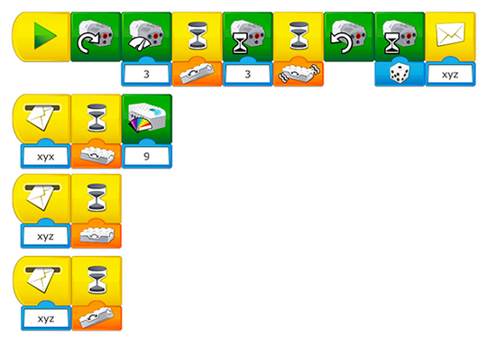

이 과제를 수행하는 과정에서 학생들이 이전 과제에서 배운 내용을 적용했는지 여부를 평가하십시오.
장면 설정하기
학생들에게 다음 지침에 따라 화산의 상태에 대응하여 물체를 새로운 위치로 옮기게 하십시오.
-
드론은 하늘을 날 수 있으나, 적색 경보일 때에만 화산을 향해 이동합니다. 이는 분화하는 화산을 탐사하기 위함입니다.
-
화산이 활동 징후를 보일 경우 평상시에 화산 근처에 살던 동물이 강 쪽으로 이동하며, 화산이 분출할 시 더 먼 곳으로 이동하기도 합니다.
-
녹색 경보일 경우, 탐사 차량을 대기 상태로 과학자의 집에 둡니다. 황색 경보가 발령되면 탐사 차량이 동물과 같은 위치로 이동합니다. 적색 경보가 발령되면 탐사 차량이 바위 표본을 수집하기 위해 화산으로 올라갑니다.
프로그래밍 도움말
과제를 세 가지 센서 모드에 할당하기
이 모델에 사용된 기울기 센서는 세 가지 모드를 탐지할 수 있습니다.
-
위로 기울기: 바늘이 녹색을 가리킴
-
기울기 없음: 바늘이 황색을 가리킴
-
아래로 기울기: 바늘이 적색을 가리킴
학생들에게 메시지 보내기 및 받기 블록을 이용해 이 세 가지 모드에 각기 다른 과제를 할당하게 하십시오.

대기 시간 블록 뒤에 배치되는 조치는 해당 모드에 따라 달라집니다.
이 프로그램은 조건의 개념을 담고 있습니다. “xyz” 메시지 보내기를 실행하면 세 개의 문자열이 동시에 활성화됩니다. 기울기 센서의 모드에 따라 한 번에 하나의 대기 시간 블록 중 하나만을 작동할 수 있습니다.
디스플레이 초기화
디스플레이의 이미지를 지우려면 프로그래밍 문자열에 이미지 “0”(흰색 이미지)을 사용하십시오.
차별화를 위한 기회
다음과 같은 요구 사항을 몇 가지 추가하여 프로젝트를 더욱 까다롭게 바꿀 수 있습니다.
-
학생들에게 각 상황별로 각각의 물체가 움직이는 방식을 나타내는 흐름도를 작성하게 하십시오.
-
학생들에게 다른 물체와 다른 조건문을 만들어 보게 합니다.
테스트 단계에서 중요한 것은 학생이 팀 활동을 제대로 수행하고 자신의 해법에 대한 논지를 제시하고 탐구 단계에서 수집한 정보를 활용하는지 여부를 확인해야 한다는 것입니다.
피드백은 1-4의 척도를 이용해 제시할 수 있습니다.
-
학생이 팀 활동을 잘 하지 못하고 해법에 대한 논지를 제시하기 못하며 수집된 정보를 추가 개발을 위해 활용하지 못합니다.
-
학생이 팀 활동을 수행하고 지침에 따라 정보를 수집 및 활용하며 교사의 도움 하에 해법에 대한 논지를 제시할 수 있습니다.
-
학생이 팀 활동을 수행하고 팀 토의에 기여하고 해법에 대한 논지를 제시하고 주제와 연관된 정보를 수집하여 활용할 수 있습니다.
-
학생이 해법에 대한 논지를 제시하고 정보의 수집 및 활용을 통해 알아낸 바를 설명할 수 있습니다.
컴퓨팅 사고력의 평가를 위한 구체적인 관찰평가표는 교사용 가이드에 수록되어 있습니다.